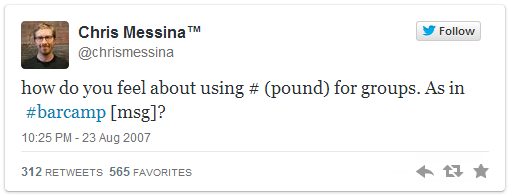

24
Chris Messina, aka 'FactoryJoe', is an open source and open standards advocate currently residing in San Francisco. He is known for his involvement in helping to create the 'BarCamp', 'Spread Firefox', and coworking movements. However, he is most famous for coming up with something that became massively popular online and today is part of the social media conversation on almost all networking websites. What?
